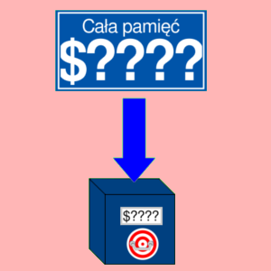

BIT
Działanie AND bez zapisu do akumulatora
Opis
Operacja iloczynu logicznego, którego operandami są liczba z akumulatora i liczba z pobrana z pamięci. Wynik nie jest zapisywany w akumulatorze, lecz są przeprowadzone operacje na flagach.
Flagi N i V przyjmują wartości odpowiednio ósmego i siódmego bitu bajtu pobranego z pamięci.
Flaga Z przyjmuje wartość 1, jeżeli wynik iloczynu jest równy zero. W przeciwnym razie flaga Z przyjmuje wartość 0.
Operacja wpływa na flagi: N, V i Z.
Tabela opkodów
| Opkod | Tryb adresowania | Czas wykonywania (cykle) |
|---|---|---|
| $24 |  |
3 |
| $2C |  | 4 |